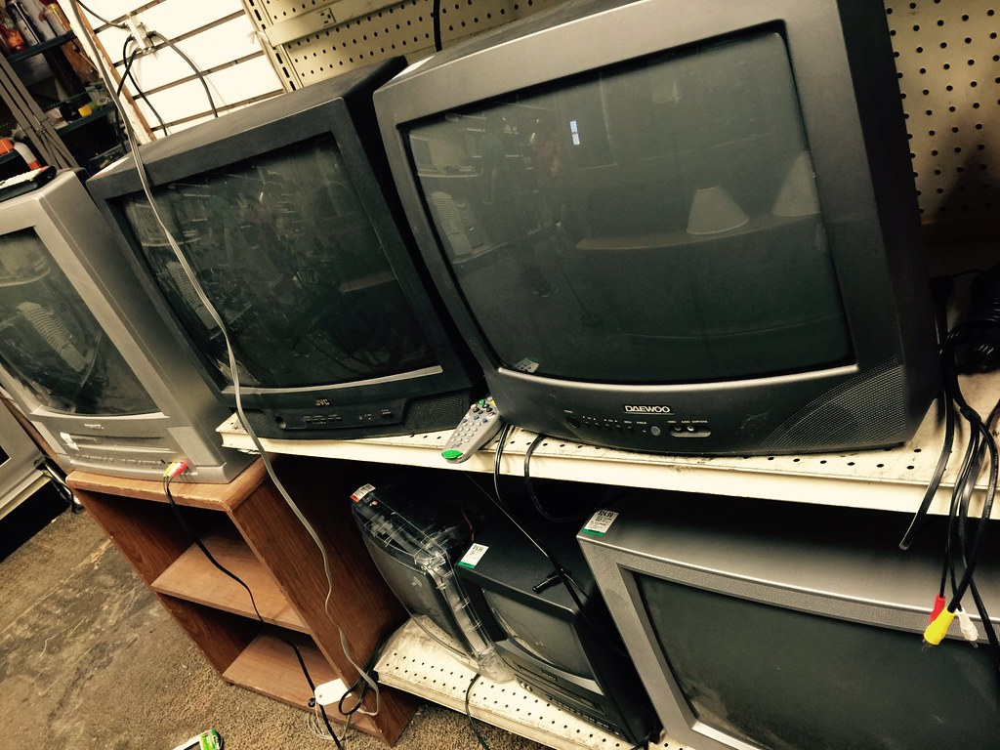

DisplayStation

Found your old PS2 in the attic?
Retro video game consoles have become more mainstream in recent years due to the cheaper nature of the second hand market and people's hoarding habits leaving old consoles tucked away in various hiding places. The next biggest obstacle usually faced by would be retro gamers is the difficulty of playing older consoles on new TVs. Many of these machines were not meant to be played on anyhting newer than a CRT, and those are becoming increasingly more difficult to obtain.
In this guide we will cover basic fundamentals of analogue video signals and what each of those cables do. While you can go off the deep end and end up getting a small degree in video signals, the aim here is to enusre you can best determine the right connections for your setup before deciding if further modifications or signal processors are required. If you are still curious about how these consoles work, additional reading material adding material and other sources are provided to answer any questions you might still have.
You can start you retro journey here or you can choose one of the pages to the left. Welcome to the world of analogue TVs!